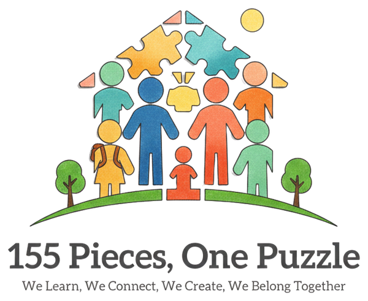

155 Κομμάτια, Ένα Παζλ155 Pieces, One Puzzle
Μαθαίνουμε, Συνδεόμαστε, Δημιουργούμε, Ανήκουμε ΜαζίWe Learn, Connect, Create and Belong Together
Κάθε μαθητής είναι ένα μοναδικό κομμάτι, και όλοι μαζί φτιάχνουμε μία εικόνα. Το έργο μας βοηθά τη σχολική μας κοινότητα να γίνει πιο συμπεριληπτική, πιο ψηφιακά ικανή και πιο συνδεδεμένη με την Ευρώπη, μέσα από ανταλλαγές μαθητών, παρακολούθηση εργασίας και επιμορφωτικά σεμινάρια εκπαιδευτικών.
Every pupil is a unique piece, and together we make one picture. Our project helps our school community become more inclusive, more digitally confident and more connected to Europe, through pupil exchanges, teacher job shadowing and training courses.
Περισσότερα για το έργοRead more about the project
🎯 ΣτόχοιObjectives
- Συμπεριληπτική εκπαίδευση και διαχείριση της διαφορετικότητας
- Ψηφιακές δεξιότητες και Τεχνητή Νοημοσύνη στη διδασκαλία
- Ασφαλές, θετικό σχολικό κλίμα και κοινωνικο-συναισθηματική μάθηση
- Εκσυγχρονισμός της διδασκαλίας μέσα από τη βιωματική μάθηση
- Inclusive education and managing diversity
- Digital competence and Artificial Intelligence in teaching
- A safe, positive school climate and social-emotional learning
- Modernising our teaching through experiential learning
🤝 Σχολεία-εταίροιPartner schools
- 🇨🇾 Α΄ Δημοτικό Σχολείο Ξυλοφάγου – ΚύπροςCyprus
- 🇮🇹 ICS 3 di Chieti – ΙταλίαItaly
- 🇮🇪 Saint Catherine’s National School, Dublin – ΙρλανδίαIreland
✈️ ΔραστηριότητεςActivities
- Ανταλλαγές μαθητών: 10 μαθητές της Ε΄ και ΣΤ΄ τάξης επισκέπτονται τα σχολεία-εταίρους στην Κύπρο και την Ιταλία
- Παρακολούθηση εργασίας (job shadowing): 6 εκπαιδευτικοί παρατηρούν τη διδακτική πράξη στην Κύπρο, την Ιταλία και την Ιρλανδία
- Επιμορφωτικά σεμινάρια: 9 εκπαιδευτικοί σε Ισπανία (Μαδρίτη, Βαρκελώνη), Φινλανδία και Ισλανδία
- Pupil exchanges: 10 pupils of Grades 5–6 visit our partner schools in Cyprus and Italy
- Job shadowing: 6 teachers observe teaching practice in Cyprus, Italy and Ireland
- Training courses: 9 teachers in Spain (Madrid, Barcelona), Finland and Iceland
→ Δείτε το χρονολόγιο των κινητικοτήτων→ See the mobility timeline
Αριθμός έργουProject number: 2026-1-EL01-KA122-SCH-000404976